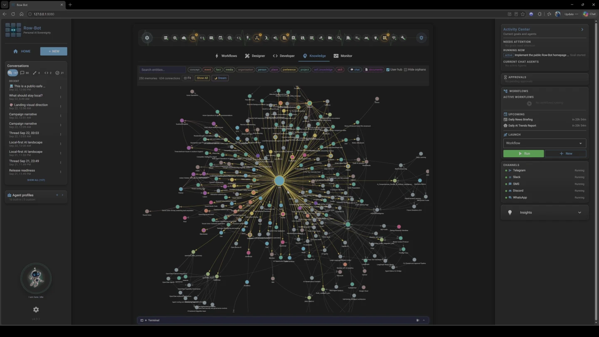
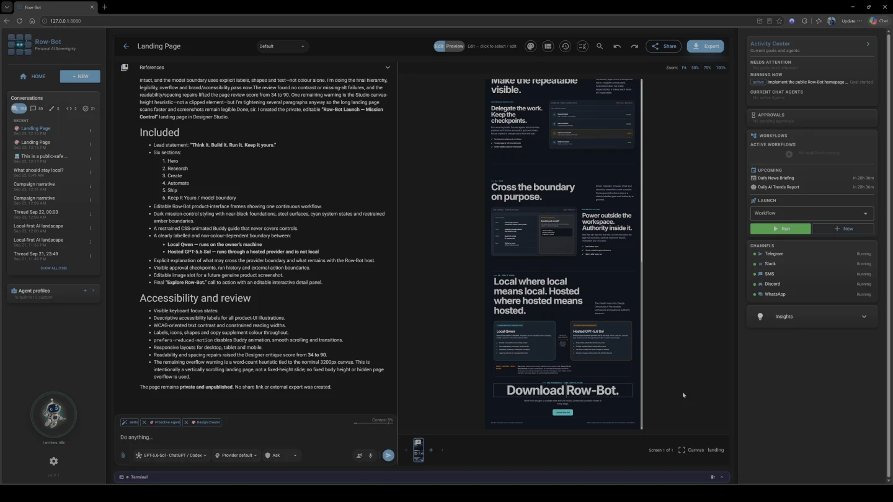
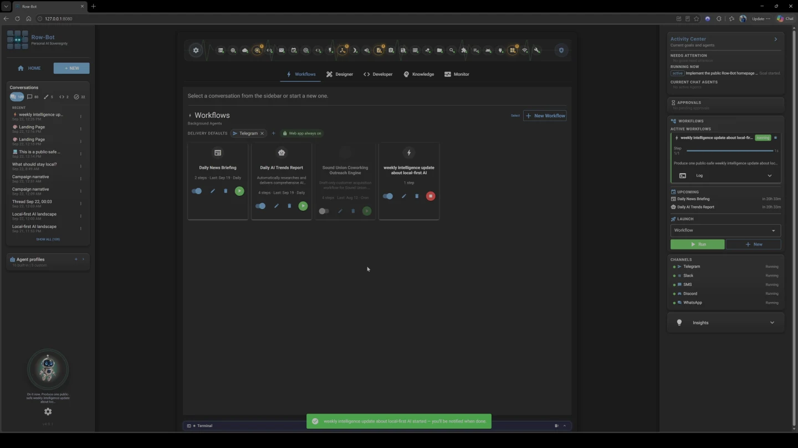
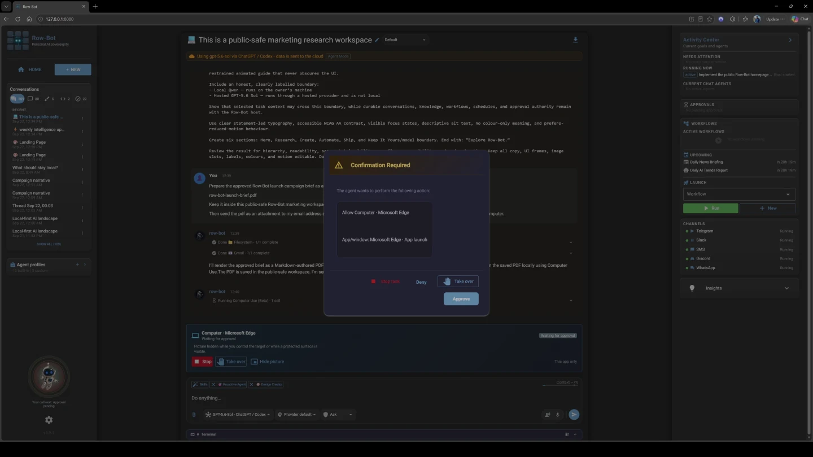

Think it. Build it. Run it. Keep it yours.
One private AI workspace that can research, create, automate, and act—with your models, data, and approvals under your control.



Buddy is researching.
01 · Research · Local
Ask across the work.
Qwen follows public sources, keeps its evidence visible, and turns the result into connected knowledge.
model:ollama:qwen3.8:27b02 · Create · Explicit handoff
Turn context into something real.
Use Sol deliberately for final synthesis and Designer direction—without pretending the hosted model is local.
model:codex:gpt-5.6-sol03 · Automate · Local
Make useful work repeat.
Build a local-model workflow, keep delivery off, and retain every run for inspection.
model:ollama:qwen3.8:27b04 · Ship · Approval gated
Cross the boundary on your terms.
Row-Bot pauses before the action, shows the target, and waits for your explicit approval.
Approval required · reviewed actionLocal · Qwen 3.8 27BHosted · GPT-5.6 SolReal UI · Normal-speed recordings
Real product demonstrations
Watch the work happen.
Three complete tasks in the real product, loaded through privacy-enhanced video facades only after you choose to play.


Local-first by architecture
Your AI.
Your machine.
Your rules.
The power of an AI platform. The ownership of local software.
- Your system of recordConversations, knowledge, workflows, and projects live with the Row-Bot host.
- Your choice of modelLocal is a real route. Hosted providers receive only the requests you send.
- Your approvalConsequential actions pause at a visible boundary.
- No Row-Bot accountOpen source, portable, and free of platform lock-in.
Explore the architecture
Compare with cloud-only AI chat
Row-Bot keeps durable system state locally, makes model routes explicit, and places approvals before consequential actions. Hosted providers still receive the context required for requests you send to them.
Before you install
Practical answers.
Local records, explicit providers, and reviewable actions.
Is Row-Bot free?
Yes. Row-Bot is Apache 2.0 licensed and does not require a Row-Bot subscription. Hosted providers and external services may have their own charges.
Can it run entirely locally?
Yes, when you select a local runtime and local tools. Hosted models, cloud embeddings, web tools, online channels, and remote access require network connections and remain opt-in.
What reaches a hosted provider?
The selected provider receives the current model-visible context needed for that request. Durable conversations, knowledge, profiles, goals, and project records stay on your machine unless you deliberately send data through a provider or networked tool.
Can I use Row-Bot from another device?
Yes. An authenticated browser can open Row-Bot from a route you choose. Every invited browser has owner authority, and the host must remain running. It is not a standalone iOS or Android download.
Continue on desktop
Keep the workbench yours.
Row-Bot runs on Windows, macOS, and Linux. Open row-bot.ai on your computer to install it.